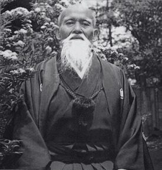

About aikido
A martial art of blending, balance and harmony
The art
Aikido (合気道) is a Japanese martial art. The name is made of three characters: ai, harmony or joining; ki, energy or spirit; and do, the way. It is often translated as "the way of harmonizing energy."
Rather than meeting force with force, an aikido student learns to move off the line of an attack, join with its energy and redirect it, ending in a throw or a pin. Good technique depends on timing, posture and relaxed power, not on size or strength, which is why people of very different builds and ages can train together.
There are no tournaments or winners in aikido. The goal is to resolve a conflict with as little harm as possible, to the attacker as well as to yourself. Many students find that this way of thinking carries over into everyday life: staying calm under pressure, keeping your balance, and dealing with difficult situations without escalating them.

The founder
Morihei Ueshiba was born in 1883 in Tanabe, in Wakayama Prefecture, Japan. From his teens he studied several classical martial arts, including jujutsu, swordsmanship and spear, and later trained extensively in Daito-ryu aiki-jujutsu.
Deeply spiritual, Ueshiba came to see the martial arts not as a means of defeating others but as a path to self-improvement and peace. During the 1920s and 30s he refined his techniques around that idea, opening the Kobukan dojo in Tokyo in 1931. The name "aikido" was formally adopted in 1942.
He continued to teach and refine the art until his death in 1969. Students of aikido everywhere call him O-Sensei, "great teacher." The Aikikai Foundation and its Hombu Dojo in Tokyo, which grew from his work, remain the world headquarters of aikido and are led today by his grandson, Moriteru Ueshiba.

How aikido is practiced
Training is done in pairs. One partner, the uke, attacks; the other, the nage, applies the technique. Then the roles switch. Both sides matter: as uke you learn to fall and roll safely (ukemi), and to stay connected to your partner rather than simply resisting.
Techniques include joint locks and pins such as ikkyo and nikyo, and throws such as iriminage, shihonage and kotegaeshi, practiced against grabs, strikes and multiple attackers.
Aikido's movements come from Japanese swordsmanship, so weapons are part of training too: the bokken (wooden sword), the jo (staff) and the tanto (wooden knife).
Students progress through colored-belt kyu ranks to black belt (shodan) and beyond. Black belts traditionally wear the hakama, the wide pleated trousers you'll see in our photos. Every class begins and ends with a bow, a sign of respect for the art, for the teacher and for your partners.
"Now and again, it is necessary to seclude yourself among deep mountains and hidden valleys to restore your link to the source of life."Morihei Ueshiba
("I'll be up at the cabin." Dave Marlow)



Practice with us
Rocky Mountain Aikikai has been practicing this art in the Denver area for decades, and new students are always welcome. Read more about our club, or find out what to expect at your first class.